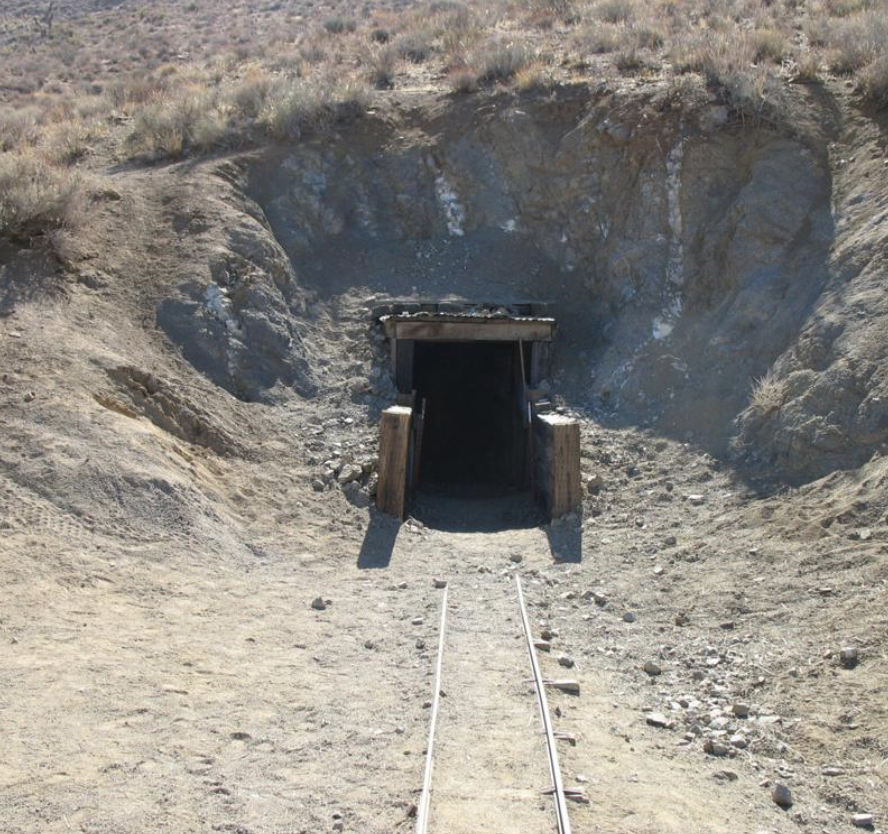

William Burro Schmidt buscaba oro en las montañas de El Paso, al norte del desierto del Mojave. Su obstáculo era una montaña escarpada que le impedía ir al sur, donde estaba el horno para fundir sus minerales.
La ruta era tan peligrosa que él mismo dijo que "nunca llevaría su mineral a la fundición de Mojave bajando por ese sendero". Era demasiado peligroso ir con sus dos burros cargados. Tenía que encontrar una manera de unir sus concesiones mineras atravesando la montaña por debajo.
En 1906 comenzó a excavar un túnel a través de la piedra. Para la primera parte empleó un pico, una pala y un martillo de hierro. Para la segunda parte, además de eso usó cartuchos de dinamita para abrir grietas. Tenía que colocar los explosivos cuidadosamente porque estos tenían mechas muy cortas. Habiendo terminado de perforar, sacaba toda la piedra empujando un carretillo.
El túnel medía 1.8 metros de alto y 3 metros de ancho. Se había abierto paso a través de roca madre de granito sólido, la roca era tan dura que no necesitaba apuntalar.
La entrada meridional (sur) tenía vistas a las aldeas fantasma de Garlock y Saltdale. El túnel estaba bajo la cima de una montaña de 1.300 m. Estos sitios tenían que ser autosuficientes porque estaban desconectados por las distancias, la falta de agua y el calor. No había una comunidad estable y todo eran obreros y mineros. No había leyes y se resolvían los conflictos directamente. También se podía ver el valle de Fremont y el lago seco de Koehn.
Schmidt se quedó atrapado varias veces cuando se derrumbaba el techo, y normalmente estaba herido. Pasado un tiempo instaló un vagón minero con raíles. Aun así continuaba excavando. Con el vagón podía sacar las piedras más rápido.
No fue hasta más tarde que se dio cuenta que su proyecto iba a ser inútil.
En 1920 construyeron una carretera que unía Last Chance Canyon con Mojave. Esto quitó todo el propósito al túnel de Burro. Ya no era necesario. Se podía transportar todo por la nueva carretera.
A pesar de la ruta moderna, a Burro le dio igual y quiso terminar su túnel. Prefirió perseverar a pesar haber una nueva forma de transporte funcional. Por el momento llevaba 14 años de trabajo. Siguió su obra hasta que quedó completa.
En 1938 consiguió su objetivo. Había excavado 2.500 pies de distancia y movido 5.800 toneladas estadounidenses de piedra a mano él solo.
Pasó 32 años de su vida excavando el túnel, 18 sabiendo que no iba a servir de nada.
Schmidt nunca estrenó su túnel para llevar minerales. Nadie lo usó.
Después lo vendió a otro minero, cogió sus cosas y abandonó el lugar. Su cabina de madera sigue en pie a día de hoy y el terreno es propiedad del gobierno.

 La entrada está al lado del campamento. La salida está justo al terminar la carretera más pequeña al sur.
La entrada está al lado del campamento. La salida está justo al terminar la carretera más pequeña al sur. 35,52814° N, 117,71984° O
Fin
Gracias por leer. Esta historia me llamó la atención cuando la descubrí. Estaría bien visitar el sitio algún día.